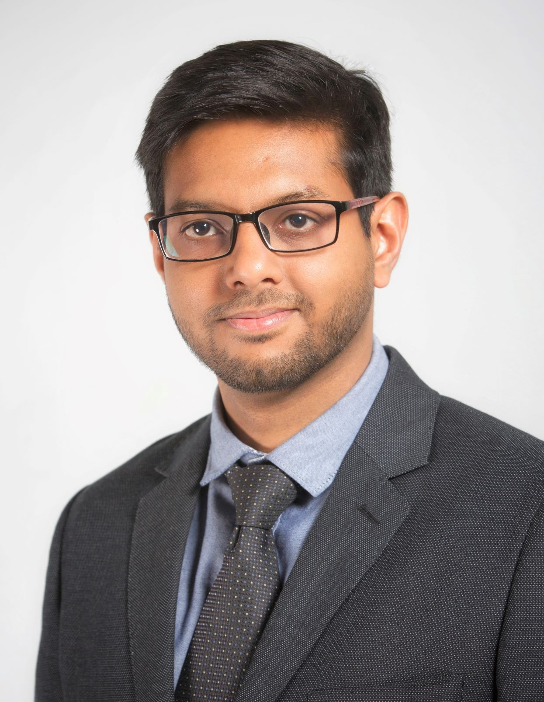

|  |
Hello! I am a postdoctoral researcher at Cardiff University. My interests are rooted in understanding the mechanics of thin and slender adaptive structures I am passionate about structural mechanics and differential geometry, which I try to study via analytical, numerical, and experimental methods. I have worked and studied at different countries: Spain, Germany, France, UK. |